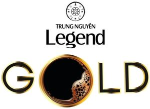

Trade Mark Journal No.2025/029 18 July 2025
WO0000001850635 (30)
Office of origin: Viet Nam

The applied-for mark consists of the wording "TRUNG NGUYÊN" arranged above the bigger wording "Legend", and the device part is expressed by 3 concentric circles, out of which a 8-wing star is centered the smallest circle and medium circle, 2 small pairs of heart and 2 small pairs of device of yin and yang are interposed between the gap generated by the medium circle and largest circle; the said verbal and figurative elements are represented in black. Putting beneath is the wording "GOLD" in black with a border mixing by the color yellow and brown, of which the letter "O" is stylized as a cup of coffee with foam on the surface. All the above elements are placed on a white background.
The mark contains the colours black, yellow, brown and white.
The color black appears on the wording "TRUNG NGUYEN Legend" and the device. The color black, brown and yellow appear on the wording "GOLD". The color white appears on the background of the mark.
- Class 30
- Coffee; coffee-based beverages; artificial coffee; unroasted coffee; coffee beverages with milk.
TRUNG NGUYEN INVESTMENT CORPORATION
Representative: BROSS & PARTNERS INTELLECTUAL PROPERTY JOINT STOCK COMPANY (BROSS & PARTNERS), 21st Floor, CharmVit Tower, , 117 Tran Duy Hung Street, Trung Hoa Ward,, Cau Giay District, Hanoi City, VIET NAM